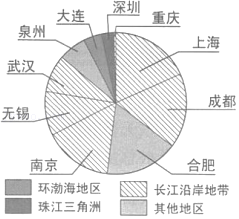

2019年北京市中考地理真题 · 选择题 第16、17、18、19、20题
如图为《清明上河图》的苏绣作品（局部），反映了北宋都城汴梁（今河南开封）的繁华风貌。读图，完成第15﹣17题。

16．由图中景观可推断当时该地（ ）
A．水运发达B．商业落后C．水流湍急D．全年少雨
17．苏绣是中国的四大名绣之一，产生于丝绸之乡﹣﹣江苏。苏绣（ ）
A．能体现出西北大漠的地域特点
B．作品都反映了江南水乡的景观
C．是我国蒙古族女子的传统技艺
D．原料取自当地盛产的优质蚕丝
2018年8月，堪称“世界最强芯”的新一代“中国芯”以六项世界第一震惊全球。目前，“中国芯”已在通讯等领域应用。芯片是半导体电子元器件的统称，在现代电子与信息技术产业的发展中起着关键性作用。如图为我国在建主流芯片项目的投资比重分布示意图。读图，完成第18﹣20题。

18．芯片的设计制造属于（ ）
A．轻工业B．传统制造业
C．服务业D．高新技术产业
19．目前我国主流芯片项目投资比重最大的地区是（ ）
A．环渤海地区B．珠江三角洲
C．长江沿岸地带D．其他地区
20．新一代“中国芯”的应用可能带来的影响有（ ）
①发挥我国劳动力资源丰富的优势
②推动我国科技的自主创新
③与发展中国家经济联系逐渐减少
④提高相关产品质量和价值
A．①②B．①③C．②④D．③④
为了更好地进行海峡两岸农业合作交流，海南省搭建了琼台基地等交流平台。如图为海南岛和台湾岛的位置及地形图。读图，完成第21﹣23题。